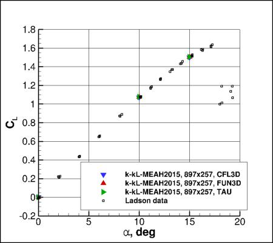
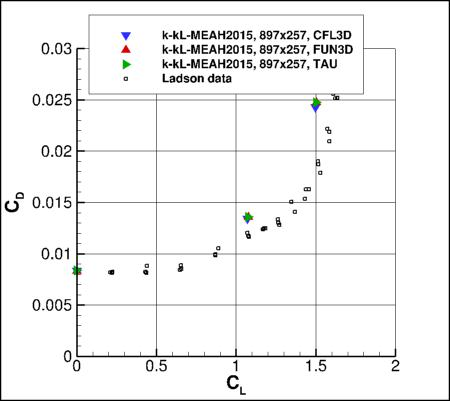
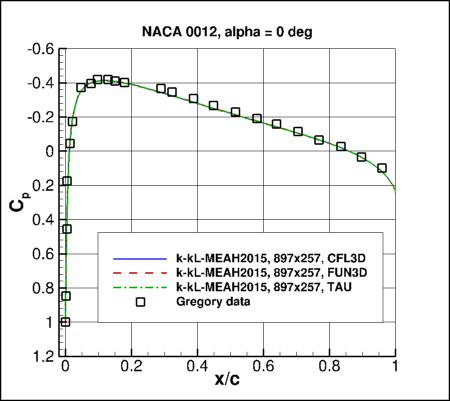
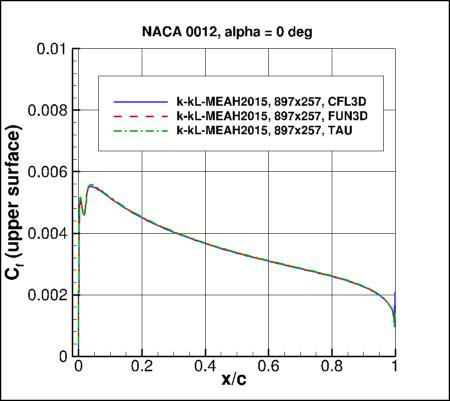
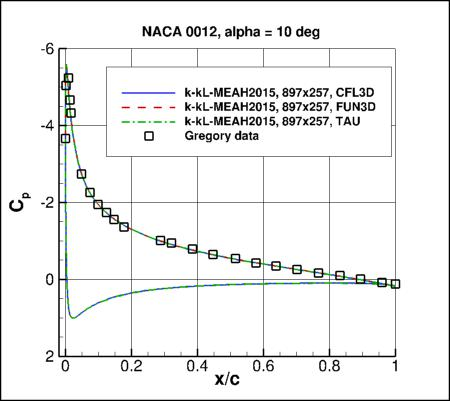
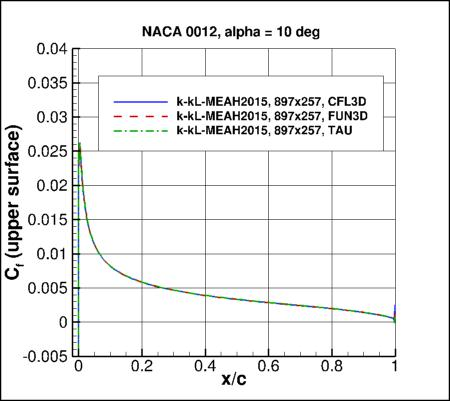
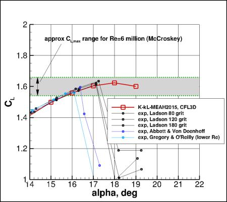
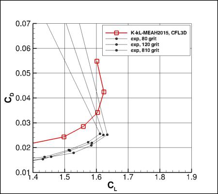
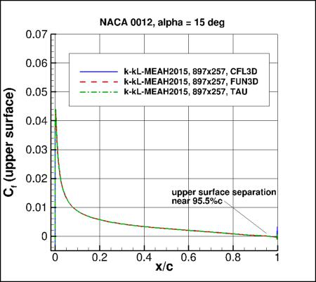
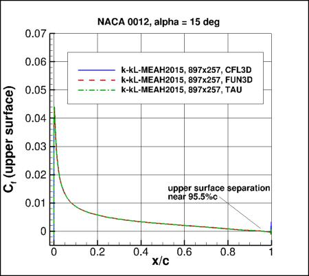

|
Langley Research CenterTurbulence Modeling Resource |
Jump to: SA Results, SA-RC Results, SSTm Results, SST-Vm Results, SSG/LRR-RSM-w2012 Results, Wilcox2006-klim-m Results, EASMko2003-S Results, K-e-Rt Results
Return to: NACA 0012 Validation Intro Page
Return to: Turbulence Modeling Resource Home Page
2D NACA 0012 Airfoil Validation Case
K-kL-MEAH2015m Results
Link to K-kL-MEAH2015m equations






Previously on this page the results were reported as k-kL-MEAH2015 solutions, but more properly they should be referred
to as k-kL-MEAH2015m. Essentially no difference is expected.
Note that thorough
grid studies were not performed for validation cases such as this one.
Some effort was made to ensure reasonable grid resolutions, but there may still be
small noticeable discretization errors. Therefore, these validation results shown should be considered
representative, but not "truth."
(See the NACA 0012 Numerical Analysis Case for a
representative verification exercise of this airfoil case.)
Above k-kL-MEAH2015m results are from CFL3D, FUN3D, and TAU
on the 897x257 grid.
Both CFL3D and FUN3D used freestream turbulence intensity=0.052% and freestream turbulent viscosity (relative to laminar)=0.009
(additional details can be found in the CFL3D User's Manual, Appendix H),
while TAU used freestream turbulence intensity=0.1% and freestream turbulent viscosity (relative to laminar)=0.1.
Please read note 5 on Notes on running CFD page.
Results are overall very close between the three codes, with the largest
difference seen in drag at alpha=15 deg (approximately 2% difference).
These discrepancies between codes are due to discretization errors,
boundary condition differences, and/or
possible code-to-code implementation-detail differences.
See NACA 0012 Numerical Analysis Page for more discussion
about numerical issues associated with the NACA 0012 airfoil case.
Note that these are compressible code results
at "essentially incompressible" conditions of M=0.15.
There may be a very small influence of compressibility.
Only the CFD data files from CFL3D's k-kL-MEAH2015m results are given here for reference:
n0012clcd_cfl3d_kkl.dat,
n0012cp_cfl3d_kkl.dat, and
n0012cf_cfl3d_kkl.dat.
A typical CFL3D input file is:
n0012_cfl3d_typical_kkl.inp.
A typical FUN3D input file is:
fun3d.nml_typical_kkl_2.
Behavior of model near CLmax:
The behavior of the k-kL-MEAH2015m model near maximum lift for this 2-D case is shown in the following plots (CFL3D only).
The cases were run every 1 deg (starting at 15 deg.), at least until CL,max was approximately attained.
Note that the highest angle of attack run (alpha=19) did not converge well in this case.
An approximate CL,max range from experiments (McCroskey, AGARD CP-429, July 1988; also NASA TM 100019, October 1987)
is highlighted in the first plot by green dashed lines.
Note, however, that experimental data near maximum lift no doubt contains a significant degree of three-dimensionality.
Also, these CFD results are still on the 897x257 grid, and there is likely to be significantly more grid sensitivity
for the higher angles of attack than for the lower angles of attack shown above. Therefore, the results below
should only be viewed qualitatively.


Jump to: SA Results,
SA-RC Results,
SSTm Results,
SST-Vm Results,
SSG/LRR-RSM-w2012 Results,
Wilcox2006-klim-m Results,
EASMko2003-S Results,
K-e-Rt Results Return to: NACA 0012 Validation Intro Page Return to: Turbulence Modeling Resource Home Page
Recent significant updates: Responsible NASA Official:
Ethan Vogel
 

CODE
CL (alpha=0)
CL (alpha=10)
CL (alpha=15)
CD (alpha=0)
CD (alpha=10)
CD (alpha=15)
CFL3D
approx 0
1.0700
1.4980
0.00831
0.01341
0.02428
FUN3D
approx 0
1.0767
1.5048
0.00827
0.01358
0.02473
TAU
approx 0
1.0772
1.5040
0.00836
0.01358
0.02477
02/02/2018 - added TAU results
Page Curator:
Clark Pederson
Last Updated: 03/04/2025